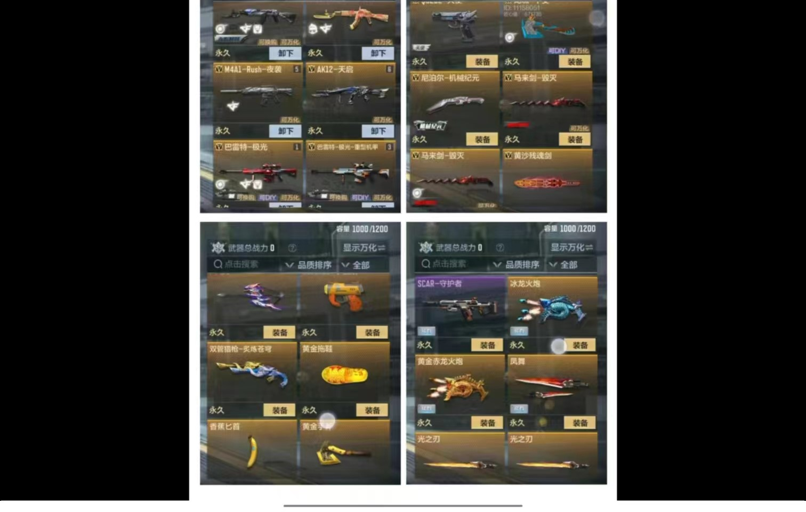
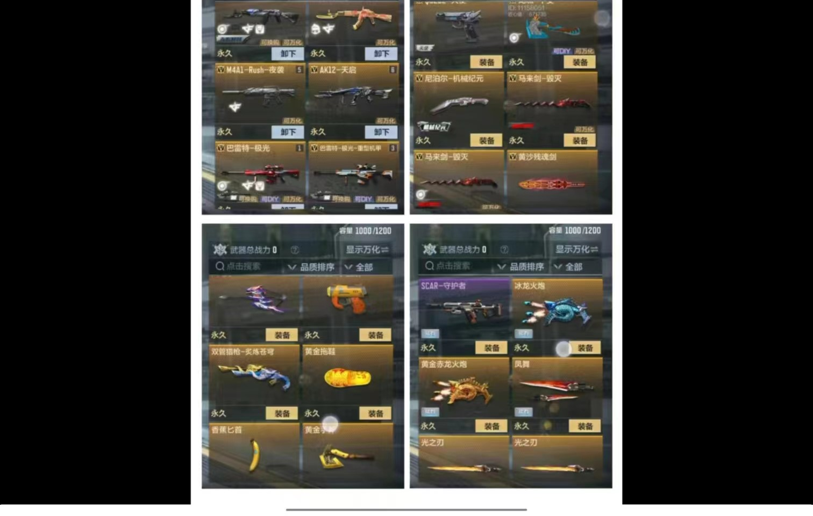

管诚恩
From USTB SAEE
13417843784

我是管诚恩，来自广东的靓仔，大一自动化er一枚，正准备在寒假开始入门STM32与个人网页展示，新手上路，请多关照...
性格特征
Personal CharacteristicsS开朗积极
沟通合作
耐心稳定
灵活应对
开朗积极
沟通合作
耐心稳定
灵活应对
我是一个机警而坦率的人，拥有不错的分析能力和独特的策略思维。我习惯于灵活、便捷的问题解决方法。能适应当下的生活，保持对事情的长时间热情,懂得如何从中找到乐趣和变化
学习能力
Academic Capability学习意愿
学习方法
理解应用
记忆反应
学习意愿
学习方法
理解应用
记忆反应
我目标清晰，好奇心强，有较强的学习能力，善于向他人请教问题，并虚心听取。能较好地平衡时间，达成规划，对于科创类项目学习以及动手实践较感兴趣，参与了许多培训
综合素质
General Competence逻辑思维
实践动手
适应环境
学习经历
educational background这些年，迷茫过也彷徨过，幸运的是终于找到了自己的方向，望未来能继续坚持着自己的原则，不卑不亢的前进着，同时不忘初心，无论世界如何，我永远保持着自身的正能量和上进心，结识更多志同道合的同伴，学习到更多的知识以及思想，改善自身缺点，在大学实现新的突破。
城东中学
初中 / 3年
认知提升
在初中慢慢学会做人做事，不再是不知天高地厚的毛头小子，对外界事物有了初步的认知
珠海市第一中学
高中 / 3年
思想提升
在高中接触到更多外界的思想并融会贯通形成更多自我的思想，拥有了部分独立完善的思维与能力
北京科技大学
本科 / 4年
能力提升
在大学有着更广阔的平台，能够在各个赛道上起舞，学习到更多专业能力甚至将其应用，为过渡到社会打好基础
素质展示
demonstration of qualities过往做过的提升自我的培训以及成就～，虽然每一个都并不很出彩，但我相信坚持不懈总会有更大的成功迎接我！
培训作业
焊工大作业
View more培训作业培训作业
web第一次作业
View more培训作业
web第二次作业
View more培训作业
office大作业
View more班内职务
当任班级学习小组小组长
View more学习笔记
保持记笔记的好习惯
View more
朋辈讲义
听了所有自己感兴趣的课程
View more志愿服务
参加贝壳寒招与翱翔之翼志愿服务
View more荣誉证书
高中物理竞赛广东省三等奖
View more高中成绩进步曲线
年级倒数逆袭
View more简易电子琴
焊工培训上成功完成
View more票证
暑假参观深圳国际电子展
View more生活碎片
fragments of life偶尔喜欢记录生活的小碎片，将快乐记录下来空闲时细细回味多是一件美事，希望你也常常发现生活中的美并更加热爱它

 
